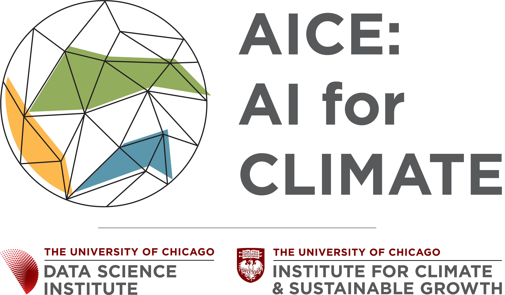
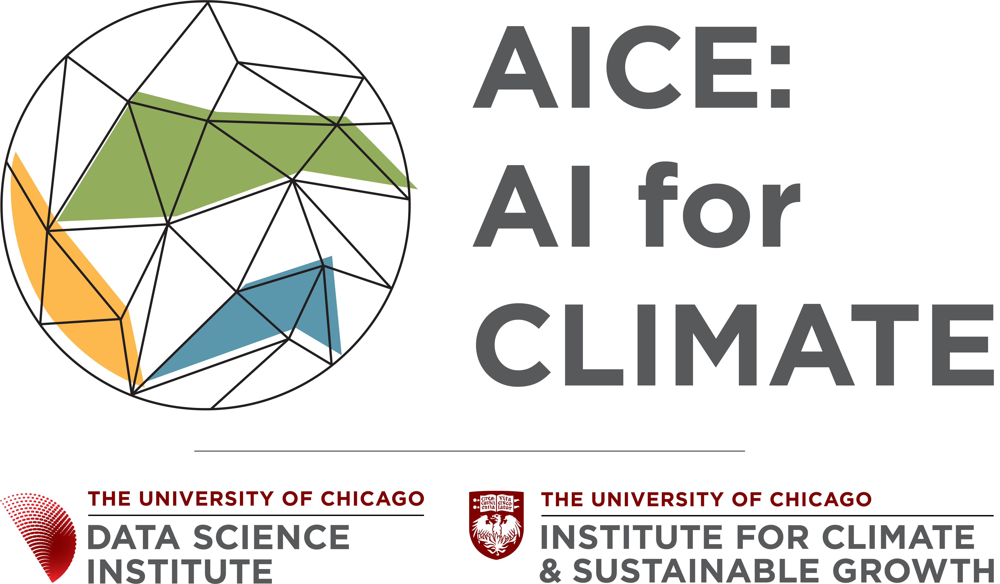

Revolutionizing Weather Forecasting for Farmers
Aim for Scale is committed to scaling cost-effective innovations that improve the livelihoods of farmers in low- and middle-income countries. Our training program brings together meteorologists, agricultural specialists, and AI researchers to explore how recent advances in artificial intelligence are creating new opportunities in medium-range to subseasonal forecasts for agricultural applications.
Program Overview
Developed by the Mohamed bin Zayed University of Artificial Intelligence (MBZUAI), the AI for Climate Initiative, and the Human-Centered Weather Forecast Initiative at the University of Chicago, with support from AIM for Scale, this training program offers a unique approach combining hands-on learning with collaborative sessions to demonstrate how AI-based weather forecasting models can be applied across agricultural services.
About the Training Program
This training program is designed to strengthen AI-driven weather forecasting capabilities. It brings together an interdisciplinary team of meteorologists, agricultural specialists, climate scientists, and AI researchers to explore how recent advances in AI are creating new opportunities in medium-range to subseasonal forecasts for agricultural applications.
Participants will learn how advances in AI are transforming the landscape of weather prediction and how they can integrate them into early-warning agricultural services.
Our training program provides a platform to:
- Run and evaluate the latest AI weather forecasting models, understanding the impact of observational data quality on their performance.
- Examine end-user needs for weather forecasts and explore easy ways to communicate this information, especially for agricultural extension services.
- Share current practices for operational use of weather forecasts in agriculture.
- Identify opportunities to integrate cutting-edge weather forecasting into existing early warning and agriculture services.
Curriculum Structure
To ensure relevance and impact, the curriculum is tailored to participants through a track-based learning structure according to their experience and responsibilities.
Technical Track
Focuses on the implementation and evaluation of AI weather models. Participants will engage in hands-on tutorials to run state-of-the-art AI weather models (e.g., AIFS, FuXi, GraphCast), apply benchmarking methods, and explore strategies for localization and downscaling.
Applied Track
Centers on integrating AI-driven forecasts into agricultural decision-making processes. Participants will identify user needs, evaluate and translate climatic variables and thresholds into actionable recommendations, and explore communication channels for delivering forecasts to extension agents.
Joint Sessions
Aims to map the current institutional landscape to understand the institutional use of forecasts and their applications in agricultural services. These sessions foster cross-disciplinary collaboration and explore how AI weather forecasting models can be integrated into early warnings and agricultural decision-support systems.